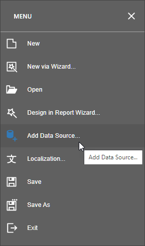

Cross-Tab Reports
A cross-tab report displays complex multi-dimensional data, such as summary statistics, surveys, and market research information. This report uses a Pivot Grid control that calculates automatic summaries and grand totals across grouped rows and columns.

Add a Pivot Grid and Bind It to Data
Drop the Pivot Grid control from the Toolbox onto the Detail band.

You cannot place a Pivot Grid in another report control (for example, Table Cell or Panel) because its width cannot be determined at design time.
Invoke the designer menu and click Add Data Source....

Navigate through the invoked Data Source Wizard's pages to set up the data source. See the Bind to Data section for more information.
After the data source is created, you can specify the Pivot Grid's Data Source and Data Member properties. Expand the Actions category and to bind the Pivot Grid to data.

Note
Ensure that a report's Data Source property is not set if you place the Pivot Grid in the Detail band. Otherwise, the Pivot Grid data is printed as many times as there are rows in the report data source.
Define the Pivot Grid's Content
To add a field to the particular grid area, expand the Actions category and click one of the following buttons.
Icon Description 
Adds a field to the Filter Header area. This field is available for further customizations. 
Adds a field to the Data Header area. The summaries will be calculated for all the cells, each cell is identified by a specific column and row. 
Adds a field to the Column Header area. This field's values will represent column headers. 
Adds a field to the Row Header area. This field's values will represent row headers. Use these buttons to define the Pivot Grid's layout.

To adjust a Pivot Grid field, select the required grid field on the design surface, switch to the Properties panel and expand the Actions category. Specify the Data Column Name property to bind a grid field to a data source field.

You can also specify the field position, using the Area property or change the order of fields within their area, specifying the Area Index property. If required, it is possible to customize many other properties for the Pivot Grid and its fields.
Adjust the Pivot Grid's Layout
Set the report's Vertical Content Splitting property to Smart to split the Pivot Grid along the column borders if it does not fit the report's page in Print Preview.

Specify the Pivot Grid's Print Options
Use the Options category's Print Options section to specify print options and define which Pivot Grid elements are printed.
Set the Print Data Headers property to No to prevent data fields' headers from being printed.
Enable the Print Row Area On Every Page property to repeat row headers on each document page when the Pivot Grid's layout is divided horizontally across several pages.

Switch to Print Preview to see the resulting report.